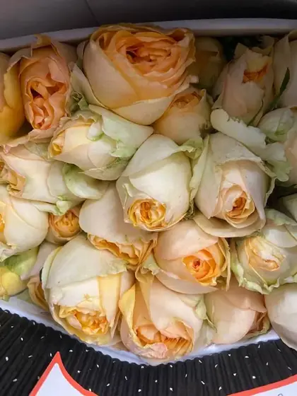
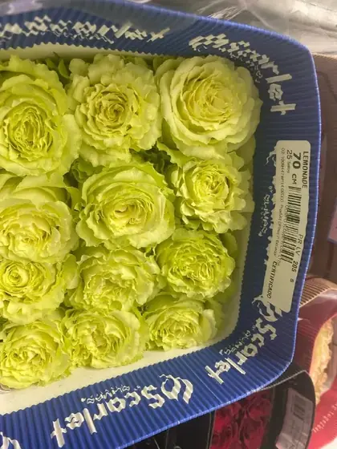

Оптовикам и цветочным базам
Под заказ
Вы присылаете сорта, длину и количество коробок, мы размещаем заказ на плантациях и привозим.
Цветы из Эквадора, Колумбии, Голландии, Кении, Италии и Чили. Под заказ и со склада в Санкт-Петербурге, от 1 банча. Возим с 2018 года, по каждой партии сверяем документы.
Нажмите на розу, чтобы добавить её в запрос. Листайте вбок, чтобы увидеть остальные.
Эти сорта мы возим постоянно. Отметьте нужные, и они попадут в запрос. Наличие и цены на ближайший рейс — в прайсе.
Другие сорта — под заказ.
Страны расставлены по широте, пунктир — экватор. Закупаем напрямую у плантаций, и до склада в Шушарах цветы едут при +2…+4 °C. Нажмите на страну, чтобы открыть каталог.
От крупной оптовой поставки до закупки со склада без ожидания рейса.

Вы присылаете сорта, длину и количество коробок, мы размещаем заказ на плантациях и привозим.
Цветы в наличии на складе в Санкт-Петербурге, ждать рейса не нужно.

Вы закупаете у плантаций сами, а доставку в Россию и документы мы берём на себя.
Доставка по России, в СНГ и за рубеж.
Сорта, длина стебля, количество коробок.
Размещаем заказ на плантациях.
Присылаем отчёт: что куплено, с какой плантации, сорт, длина стебля и количество.
Вылет в среду или воскресенье. До склада в СПб обычно 5–6 дней.
Забираете со склада или получаете доставкой по России, в СНГ или за рубеж — с полным комплектом документов.
Постоянный график — можно планировать продажи заранее.
Тёмным отмечены дни вылета, красной рамкой — сегодня (по Москве).
До конца приёма заявок
В одну партию собираем цветы с нескольких плантаций.
Проверяем в инвойсах, сертификатах и пакинге номера, вес и количество коробок. По каждой позиции видно, с какой она плантации.
По каждому клиенту ведём выписку: инвойсы, оплаты, рекламации, остаток.
Публикуем без правок. Все отзывы, включая критические, можно прочитать там же.
Отличное место с дружелюбным и компетентным персоналом. Приятные цены, минимальная покупка- упаковка (25шт.) На месте можно подарочно упаковать. Рассказали про каждый сорт, какой будет когда распустится полностью, будет запах или нет. Может делать индивидуальные заказы от одной упаковки за 7 дней.
22 декабря 2025, Яндекс Карты teenw★★★★★Невероятный выбор, да ещё и такой свежак, только-только привезли поставку 😍 Супер!! Пахло ВО, КРАСОТА 💐💐💐
25 декабря 2025, Яндекс Карты Евгения Стёпочкина★★★★★Лучшие цветы в СПБ и ЛО
10 апреля 2026, Яндекс КартыНовые партии выкладываем в Telegram-группе.
1 банч, то есть одна упаковка.
Вылеты каждую среду и воскресенье. До склада в Санкт-Петербурге обычно 5–6 дней.
По московскому времени: на рейс в среду — до 23:00 воскресенья, на рейс в воскресенье — до 23:00 среды. Другие сроки подачи заявки обсуждаются индивидуально.
Да. На складе в Санкт-Петербурге есть цветы в наличии. Напишите, и мы расскажем, что есть сейчас.
Да. Доставляем по России и СНГ, возможна международная доставка. Цветы также можно забрать со склада.
Полный комплект документов по партии. По каждой позиции указаны плантация, сорт, длина стебля и количество стеблей. Номера, вес и количество коробок указаны в инвойсах, сертификатах и пакинге.
Да. Заказ не привязан к одной ферме, в одну партию можно собрать цветы с нескольких плантаций.
По каждому клиенту ведём выписку: инвойсы, оплаты, рекламации, остаток. Рекламации обрабатываются в течение 24 часов после заявки.
Напишите в Telegram, WhatsApp, MAX или на почту, и мы пришлём актуальный прайс.
Склад HOME ROSES в Санкт-Петербурге. Импортируем цветы с 2018 года.